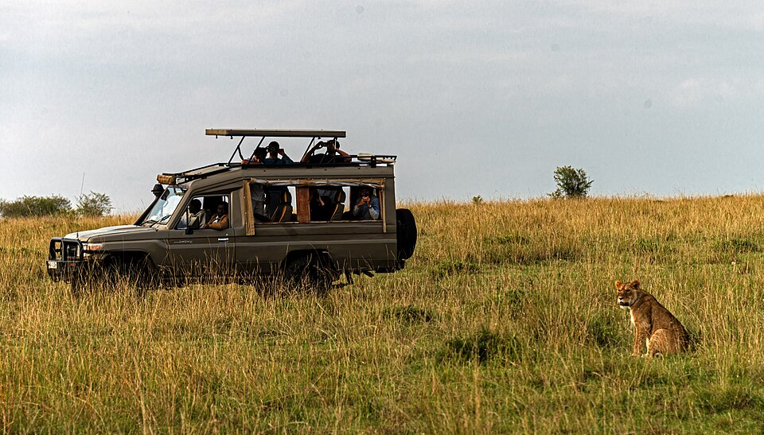
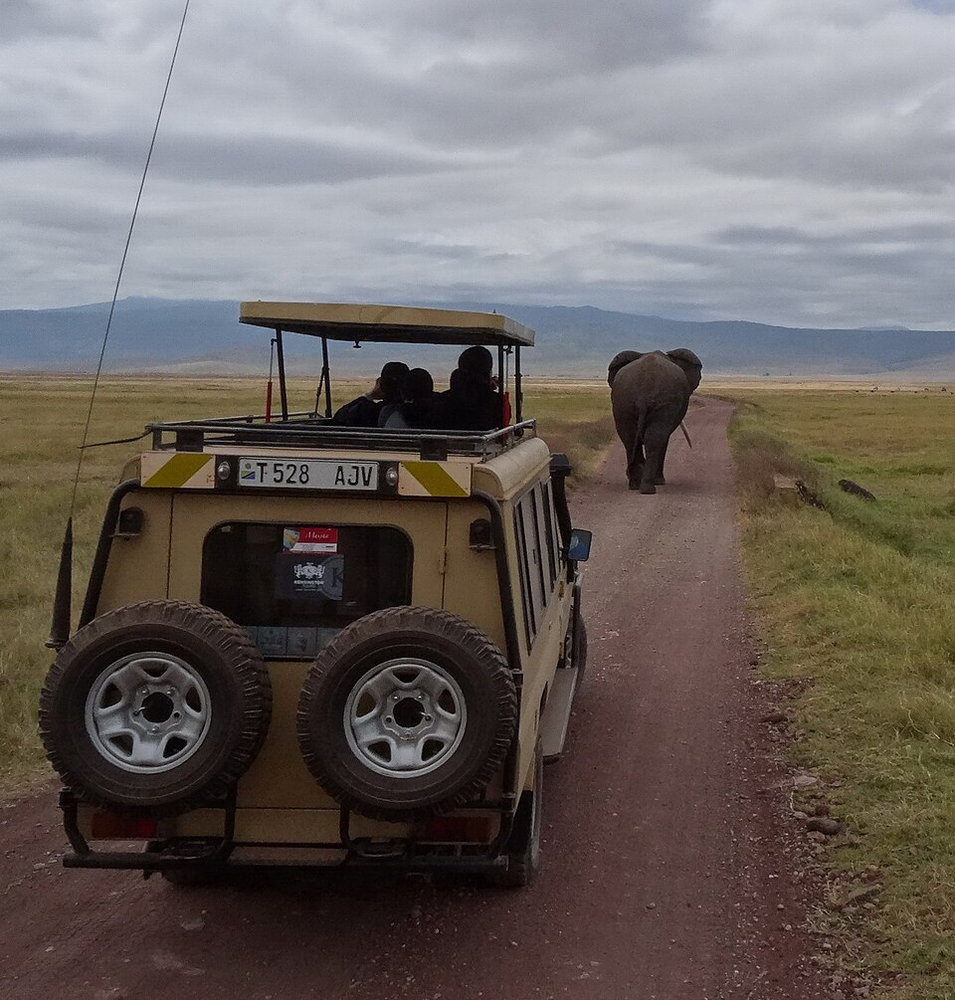
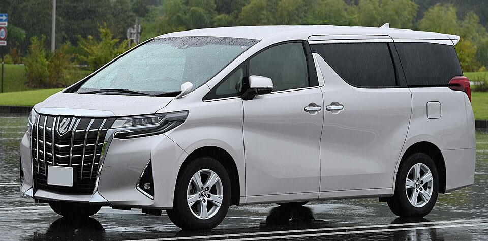
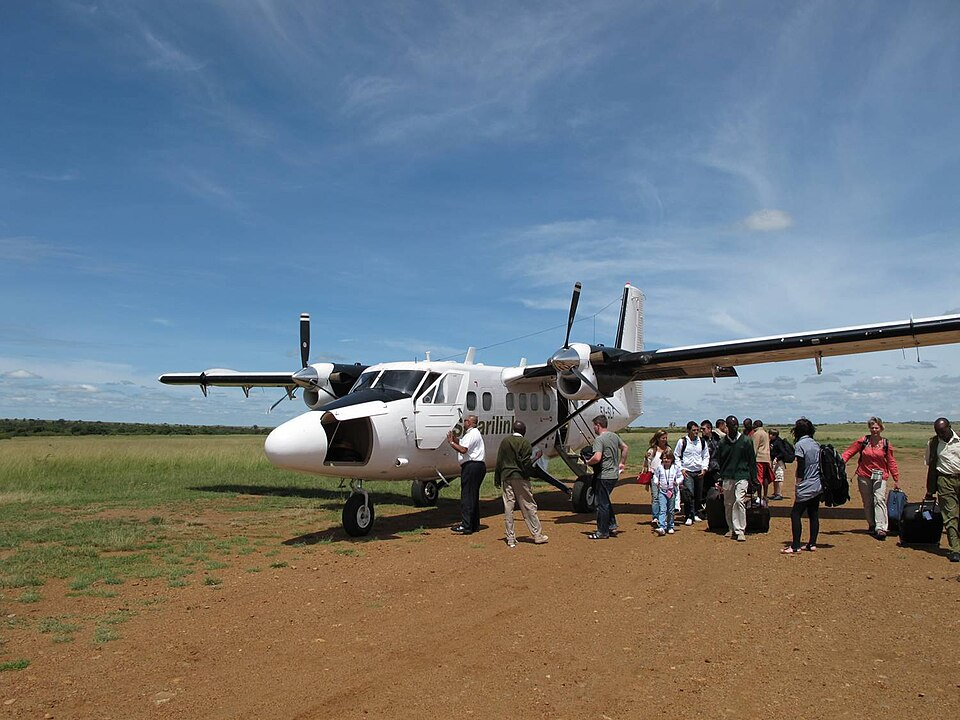
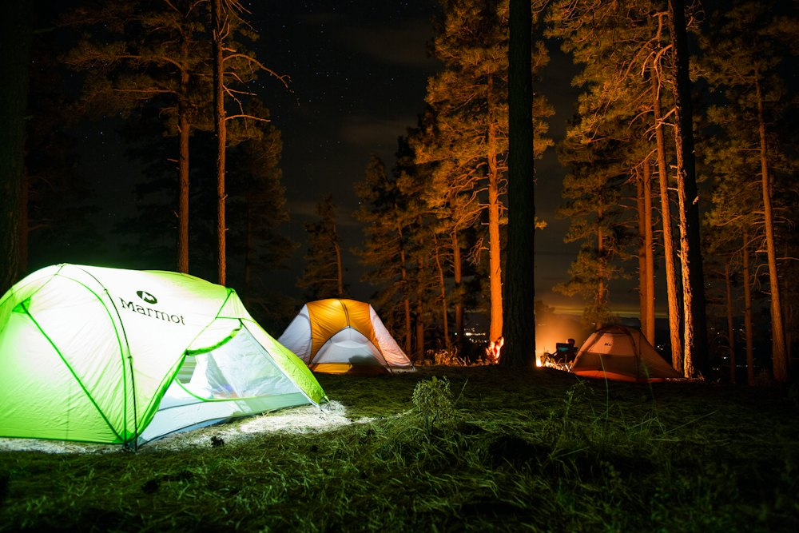
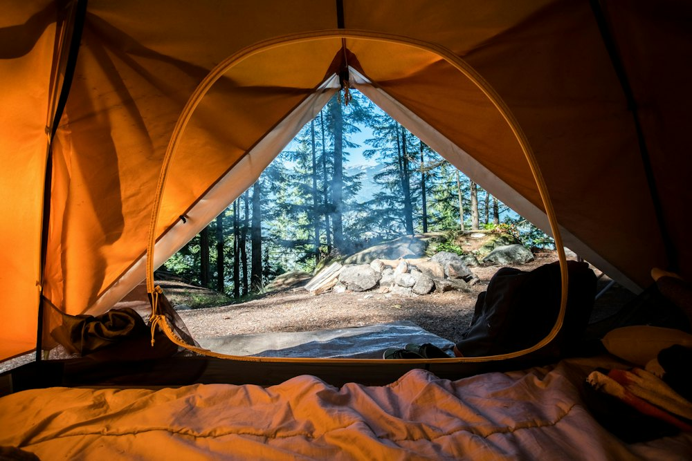
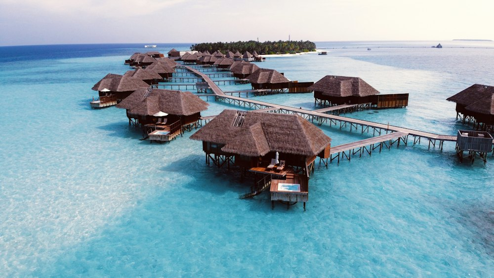

Pop-top Land Cruiser
- Window seat for everyone
- Pop-up roof for 360° views
- Charging points

Everything we provide on safari, and the standards we hold it to.





Photos: Daniel Case (CC BY-SA 4.0), Hlootus (CC BY-SA 4.0), Freesolo Adventures (CC BY 2.0), TTTNIS (CC0), DisillusionedBitterAndKnackered (CC BY-SA 3.0), via Wikimedia Commons.

$Dome tents at public campsites inside the parks, set up by our crew. Simple, social and the best value.
 $$
$$Solid rooms with private bathrooms, a restaurant, often a pool, and views over the park.

$$$Proper beds and en-suite bathrooms under canvas, close to the action. You hear the lions at night.

$$$$Private plunge pools, fine dining and exclusive locations for honeymoons and special trips.
 $$–$$$$
$$–$$$$Indian Ocean hotels on white sand for a few easy days after the dust of safari.
 $$
$$Mountain camps and huts on Kilimanjaro, Mount Kenya, Rwenzori and the Virungas, run by our crews.
Every guide is certified, first-aid trained and born in the region they guide. Ask for one by name when you book.
Born in Narok County on the edge of the reserve, John tracked his first lion family at 19. He leads our Great Migration safaris and knows the river crossing points better than anyone.
A former Uganda Wildlife Authority ranger from Kisoro, at the foot of the Virungas. Aisha has completed more than 400 gorilla treks and is brilliant with first-time trekkers.
A decade in the Serengeti and Ngorongoro, and a self-taught ornithologist with 620 species logged. David leads our birding add-ons and calving-season safaris.
Grace runs our Rwanda programme and has guided more than 300 treks in Volcanoes National Park. She weaves conservation and culture into every day on the road.
A Maasai tracker who reads footprints like headlines. Peter leads our walking safaris and conservancy stays, where you can explore on foot and by night.
Raised in the village of Machame on Kilimanjaro's slopes, Joseph has summited more than 250 times. He leads our mountain crew, which is trained in altitude first aid.
Travel with a dedicated guide and private 4x4 for the whole trip. Leave early, stay late, sit with a leopard for two hours, or skip lunch for the river crossing. The day is yours.
The same standards on every trip, whatever the budget.
Tell us your dates and dreams. A safari specialist will send a tailored itinerary within 24 hours, free and with no obligation.